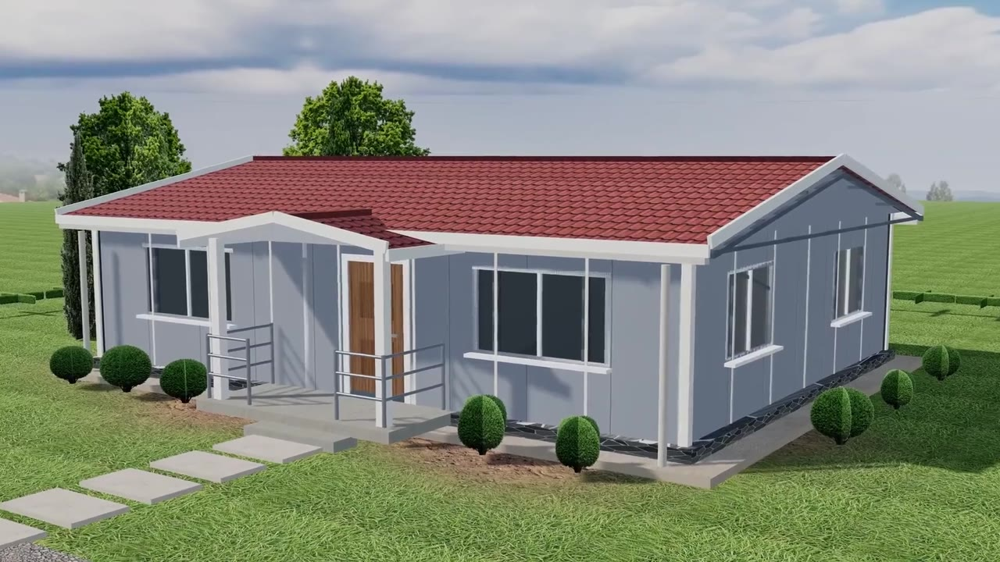
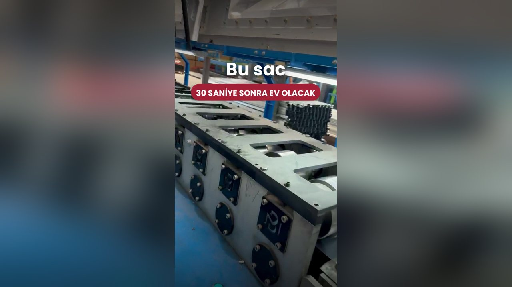
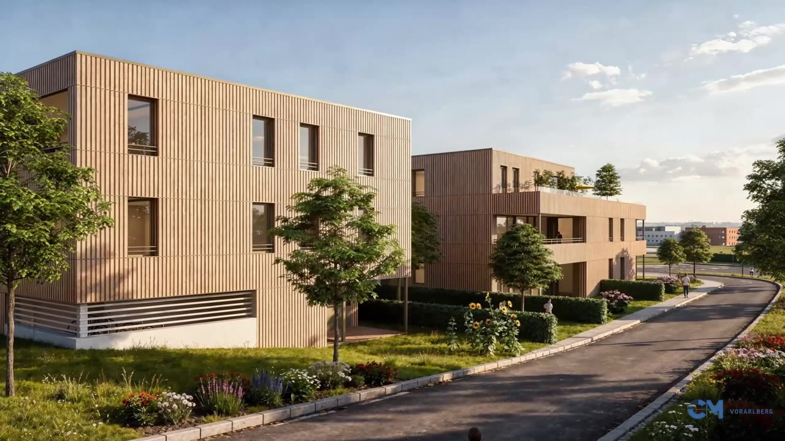
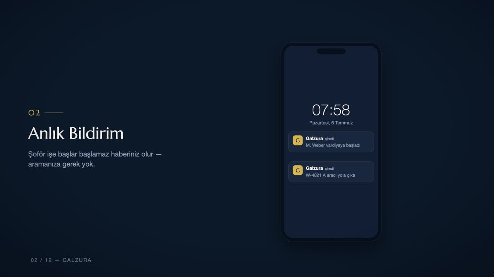

İnşaat 3D modelleme, emlak tanıtım filmi, ürün animasyonu, klip çekimi ve drone prodüksiyonu — Yalova'da tek ekipten.
Yalova'da kendi ekibimizle çalışıyoruz; çekim ve keşif için aynı gün yola çıkabiliyoruz.
Yürüyen Köşk, termal tesis bahçeleri, Çınarcık sahili, Erikli ve Delmece yaylaları, fidanlıklar
Havadan: Marmara kıyısı, termal kaynaklar ve yeşil yamaçlar; Bursa'ya yakınlığı sayesinde kendi ekibimizle aynı gün gidip dönebildiğimiz bir il.
Klip ve sahne: Küçük ölçekli ama yoğun ziyaretçi trafiği olan bir il; termal tesisler ve deniz kenarı kliplerde sakin bir dil veriyor. Bursa'ya yakınlık aynı gün ekip çıkarmayı mümkün kılıyor.
İşletme içeriği: Hafta sonu İstanbul ziyaretçisi cironun büyük kısmını oluşturuyor; içerik Perşembe-Cuma yayınlandığında en yüksek dönüşümü veriyor.
Düğün ve etkinlik: Termal otel ve deniz kenarı düğünleri; İstanbul'dan gelen çift oranı yüksek.
İnşaat: Yalova konut üretiminin büyük kısmı ikinci konut ve yazlık projelerinden oluşuyor. Alıcının neredeyse tamamı şehir dışında olduğu için proje, tanıtım videosu ve 3D görsel üzerinden satılıyor — maket ofisine gelmeden karar veren alıcı oranı Türkiye ortalamasının üzerinde.
Gayrimenkul: Çınarcık ve Armutlu hattında deniz manzaralı daireler, Termal'de ise doğayla iç içe villa portföyü öne çıkıyor. Manzaranın hangi kattan nasıl göründüğünü göstermek burada satışın kendisi.
Sanayi: Altınova tersaneler bölgesi ve süs bitkiciliği ilin iki ayrı üretim kimliği. Tersane tarafında büyük ölçekli iş anlatımı için havadan çekim, fidancılıkta ise ürün ve üretim süreci videosu talep ediliyor.
Merkez, Çınarcık, Termal, Armutlu, Çiftlikköy ve Altınova dahil ilin tamamında çalışıyoruz.
Oynatmak için bir işin üzerine dokun.
 Aktaş Prefabrik — 3B Ev TasarlayıcıAktaş Prefabrik Ev · Sakarya · 3B TasarlayıcıKat planından kurulan 3B ev, iç mekân gezintisi, gece görünümü, teklif formu
Aktaş Prefabrik — 3B Ev TasarlayıcıAktaş Prefabrik Ev · Sakarya · 3B TasarlayıcıKat planından kurulan 3B ev, iç mekân gezintisi, gece görünümü, teklif formu
Aktaş Prefabrik — 3B Montaj FilmiAktaş Prefabrik Ev · Sakarya · 3D Mimari · 0:10Arsadan teslime yedi aşamalı 3B montaj animasyonu, 4K kareler Ata Kumaş — Sanal Mağaza ve 3B MankenAta Kumaş · Bursa · Sanal MağazaVitrin sitesi, 3B mağaza turu, kumaşı mankende gösteren podyum, satış-stok-maliyet paneli, Telegram ile ürün yükleme
Ata Kumaş — Sanal Mağaza ve 3B MankenAta Kumaş · Bursa · Sanal MağazaVitrin sitesi, 3B mağaza turu, kumaşı mankende gösteren podyum, satış-stok-maliyet paneli, Telegram ile ürün yükleme
Aktaş Prefabrik — Bir Rulo Sacdan Havuzlu EveAktaş Prefabrik Ev · Sakarya · Reels · 0:23Firma arşivinden görüntü seçimi, kurgu, yazı bantları, kapak
Konut Projesi 3D Tanıtım AnimasyonuCM Vorarlberg · Avusturya · 3D Mimari · 0:15Dış cephe render + kamera hareketi + marka kapanışı
Galzura Tanıtım AnimasyonuGalzura · Avusturya · Animasyon · 1:00Animasyon + seslendirme + TR/DE iki dil, yatay ve 9:16 dikey sürüm Sanat bazen de aşk içindirKısa Film · 3:24Senaryo, çekim, kurgu, renk
Sanat bazen de aşk içindirKısa Film · 3:24Senaryo, çekim, kurgu, renk İstanbul artık bana iyi gelmiyorSinematografi · 0:22Görüntü yönetmenliği ve renk çalışması
İstanbul artık bana iyi gelmiyorSinematografi · 0:22Görüntü yönetmenliği ve renk çalışmasıİnşaat 3D modelleme ve mimari görselleştirme, emlak ve kurumsal tanıtım videosu, 3D ürün animasyonu, klip çekimi, drone ve FPV çekim ile işletme tanıtım videosu.
Yalova'da kendi ekibimizle çalışıyoruz; çekim ve keşif için aynı gün yola çıkabiliyoruz.
Hayır. 3D modelleme, mimari görselleştirme ve ürün animasyonu tamamen uzaktan yürüyor. Kamera veya drone gerekmiyorsa iş uzaktan yürüyor, saha gideri çıkmıyor.
İletişim
Projeni anlat, Yalova için sana özel teklif çıkaralım.